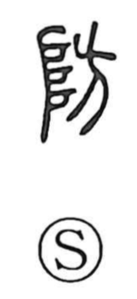

防

Uncategorized
Kun: fusegu | On: bo
to ward off ・ to defend ・ embankment
Explanation
防 is a phono‑semantic character. The phonetic is 方, which in ancient forms depicts a corpse hung from a horizontal beam, a fearsome boundary charm set up to drive off malignant spirits. The semantic is 阝 (from 阜), which Shirakawa sees as the gods’ ladder—a stepped mound marking the approach by which deities ascend and descend, and thus the threshold of a sacred precinct. Together they show such an apotropaic hanging established at the sacred approach to keep evil away and preserve the holy place, giving the senses “to ward off” and “to protect.” Early glosses also understood it as an embankment, an earthwork likewise erected to safeguard a sacred domain.